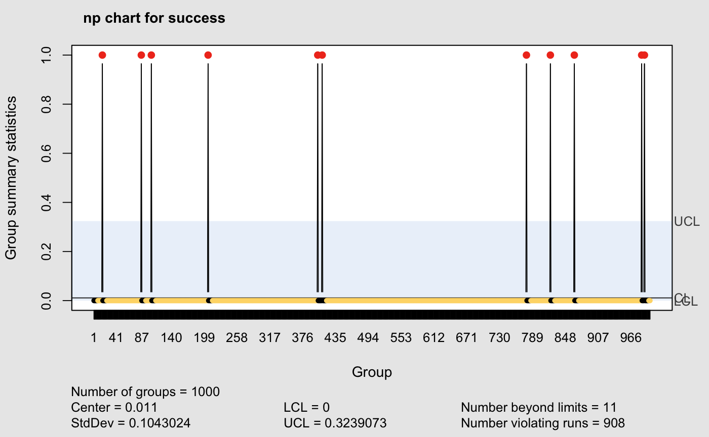
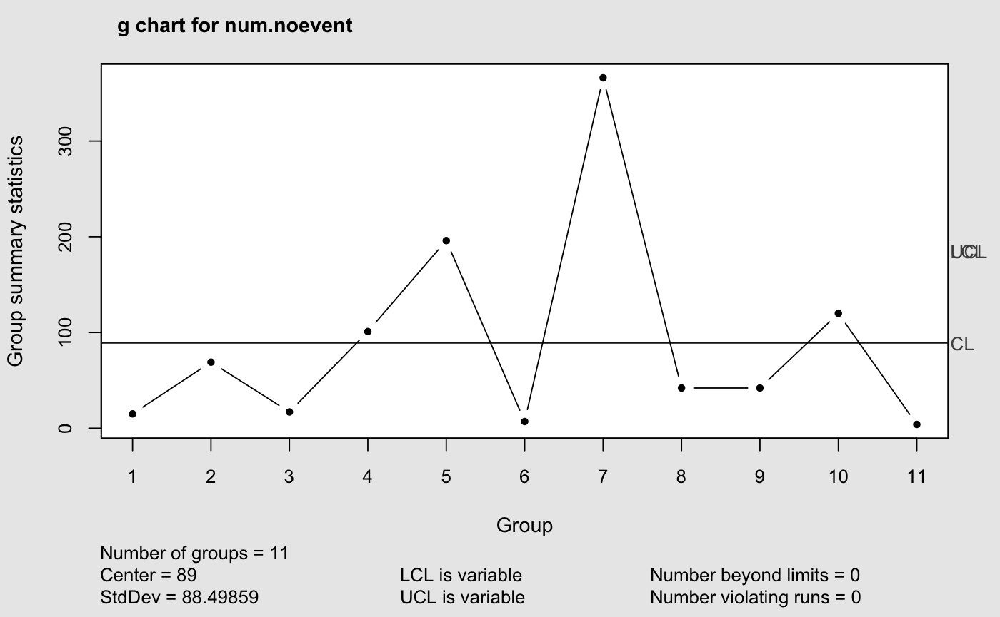

stats.g.RdThese functions are used to compute statistics required by the g chart (geometric distribution) for use with the qcc package.
stats.g(data, sizes) sd.g(data, sizes, …) limits.g(center, std.dev, sizes, nsigmas = NULL, conf = NULL)
| data | the observed data values |
|---|---|
| center | sample center statistic |
| sizes | sample sizes (not used) |
| std.dev | standard deviation of geometric distribution |
| nsigmas | a numeric value specifying the number of sigmas to use for computing control limits. It is ignored when the |
| conf | a numeric value \(\in (0,1)\) specifying the confidence level to use for computing control limits. |
| … | catches further ignored arguments. |
The function stats.g() returns a list with components statistics and center.
The function sd.g() returns std.dev the standard deviation
\(sqrt(1-p)/p\).
The function limits.g() returns a matrix with lower and upper control limits.
The g chart plots the number of non-events between events. np charts do not work well when the probability of an event is rare (see example below). Instead of plotting the number of events, the g chart plots the number of non-events between events.
Kaminsky, FC et. al. (1992) Statistical Control Charts Based on a Geometric Distribution, Journal of Quality Technology, 24, pp 63--69.
Yang, Z et. al. (2002) On the Performance of Geometric Charts with Estimated Control Limits, Journal of Quality Technology, 34, pp 448--458.
The geometric distribution is quite skewed so it is best to set conf at the required confidence interval (0 < conf < 1) rather than as a multiplier of sigma.
qcc
success <- rbinom(1000, 1, 0.01) num.noevent <- diff(which(c(1,success)==1))-1 qcc(success, type = "np", sizes = 1)#> np chart for success #> #> Summary of group statistics: #> Min. 1st Qu. Median Mean 3rd Qu. Max. #> 0.000 0.000 0.000 0.011 0.000 1.000 #> #> Group sample size = 1 #> Number of groups = 1000 #> Center of group statistics = 0.011 #> Standard deviation = 0.1043024 #> #> Control limits: #> LCL UCL #> 0 0.3239073#> Warning: The Geometric distribution is quite skewed, it is better to set conf at the required confidence level (0 < conf < 1) instead of as a multiplier of sigma.#> g chart for num.noevent #> #> Summary of group statistics: #> Min. 1st Qu. Median Mean 3rd Qu. Max. #> 4.0 16.0 42.0 89.0 110.5 366.0 #> #> Group sample size = 1 #> Number of groups = 11 #> Center of group statistics = 89 #> Standard deviation = 88.49859 #> #> Control limits: #> LCL UCL